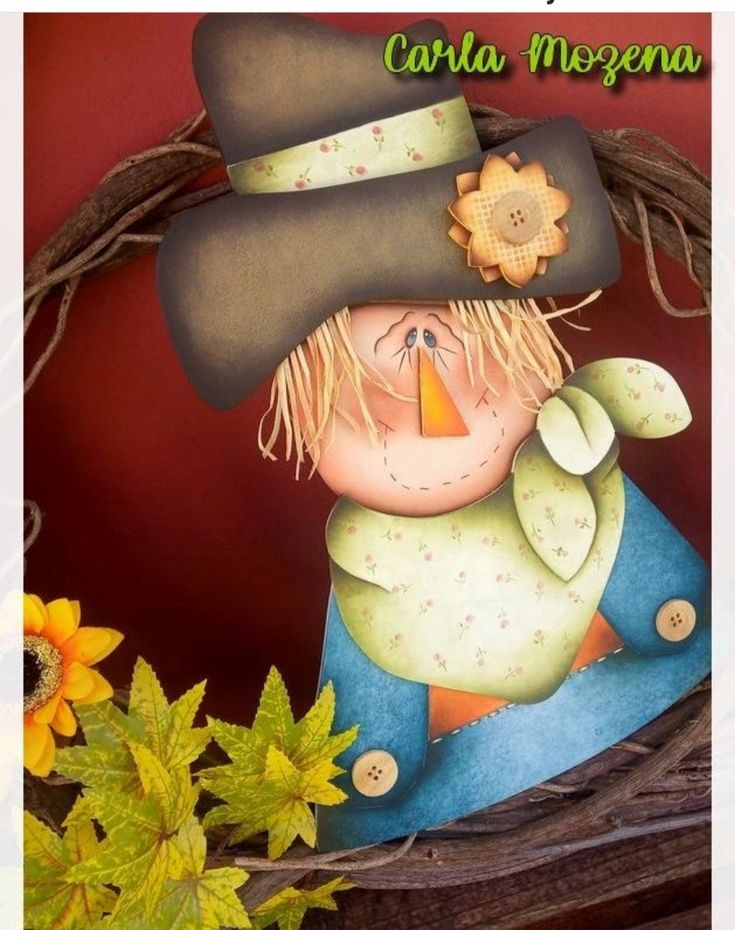

Pintura Country Americana
O que significa Pintura Country:
Este tipo de estilo era aplicado primeiramente apenas sobre a madeira. Atualmente este tipo de pintura vem decorando tecidos, objetos de cerâmicas, alumínios, basta apenas se preparar adequadamente o fundo para que seja realizada uma posterior pintura.
Existem várias modalidades de técnica de pintura country, as duas principais são a tradicional e também a aquarelada, ambas as técnicas fundamentais para quem quiser se aventurar em novas, rentáveis e bonitas produções.
Como preparar a superfície adequadamente:
Para preparar a peça é necessário primeiramente corrigir qualquer tipo de irregularidade ou mesmo buracos na superfície com massa corrida, procure em seguida deixar secar, lixe e tire o pó. Como segundo passo basta se preparar a peça ou seja a superfície do material que deverá ser utilizado.
Em seguida caso esteja utilizando esta aplicação em metais, ferro ou alumínio, procure aplicar um primer.
A seguir caso a sua composição seja em gesso ou cimento, procure utilizar base acrílica para artesanato, goma laca, fundo preparador ou mesmo multiselador.
Se fizer este tipo de composição for feito em cerâmica, e for utilizado como vaso, procure passar por dentro Vedapren Preto.
Na madeira, é interessante se utilizar o multiselador ou mesmo selador acrílico.Para utilizar em materiais de MDF é interessante utilizar um produto que é largamente utilizado na confecção das peças e por contar com uma superfície lisa que arrepia muito pouco é possível se pintar diretamente com o PVA na cor de sua preferência. Depois disto assim que estiver seco procure lixar com uma lixa 220.Este tipo de preparação permite que seja realizado um melhor acabamento, impermeabilização e ainda economia de demãos de tinta na sua pintura base. A superfície da peça deverá oferecer uma mínima aspereza, pois se ficar extremamente lisa a tinta deverá flutuar e poderá acontecer bolhas. Procure utilizar um rolo de espuma quando a superfície for larga e o pincel largo e macio para superfícies menores.
Se por acaso surgir uma marca ou mesmo sobreposição, procure arrastar imediatamente o pincel sobre a tinta que ainda deverá estar úmida. Procure afinar a tinta se ela estiver muito grossa, é interessante se passar três demãos de tinta mais diluída que uma camada grossa.Como dica, procure se lembrar que quanto maior a área mais largo deverá ser o pincel para preencher a superfície com poucas pinceladas e ainda sem marcas, é interessante se passar três demãos de tinta mais diluída que uma camada mais grossa.
Como dica normalmente você poderá utilizar uma cor diferenciada de fundo com muitos pigmentos e pouca base, é interessante se aplicar uma primeira demão com o mineral, apesar disto se a cor for escolhida ser escura, é interessante aplicar diretamente a primeira demão que ficará menos manchada e ainda irá cobrir mais rapidamente.
Para o desenho, depois da pintura de base principal é hora de se transferir o risco para o papel manteiga ou mesmo vegetal. Procure ainda esfregar grafite macio no verso e retire o excesso em papel toalha ou ainda utilize um papel carbono sem óleo ou carbono para tecido da cor que você quiser. Procure colocar o desenho sobre a peça e prenda com fita crepe ou ainda fita mágica e transfira o risco suavemente utilizando uma ponta seca com um boleador pequeno.
Em seguida procure transferir somente os detalhes maiores, deixando assim os menores como estampas, olhos, bocas, etc.
Para após a pintura das bases:Caso tenha uma base escura procure passar um lápis pastel seco no verso ou um carbono para um tecido amarelo.
Como dica, procure se lembrar que quanto maior for a área, mais largo deverá ser o pincel para preencher a superfície contando com poucas pinceladas e ainda sem marcas. Evite ainda utilizar pincéis redondos ou mesmo filetes para pintar os contornos dos desenhos, já que deixam um excesso de tintas e sobreposições.
Para os Acabamentos:
Procure sempre utilizar um verniz acrílico novo. Ele deverá fazer parte de um bom trabalho e se for mal aplicado poderá até mesmo arruinar todo o resultado de uma boa pintura.
Em seguida procure passar uma demão com cuidado para que não embole em uma região da pintura.
Em seguida procure aplicar o verniz com um rolo de espuma ou mesmo pincel largo e macio, exclusivamente preparado para o verniz.
Deixe a tinta secar em torno de 4 horas para depois envernizar. Por último utilize a cera incolor, esta que poderá ser a cera incolor caseira para dar um acabamento mais aveludado á peça.
Materiais necessários:
- Pincéis de tamanhos variados
- Carbono preto e branco
- Boleadores
- Lixas para madeira
- Tintas PVA ou Acrílicas
- Lápis,borracha,riscos
Acesse nossas aulas:pagina2